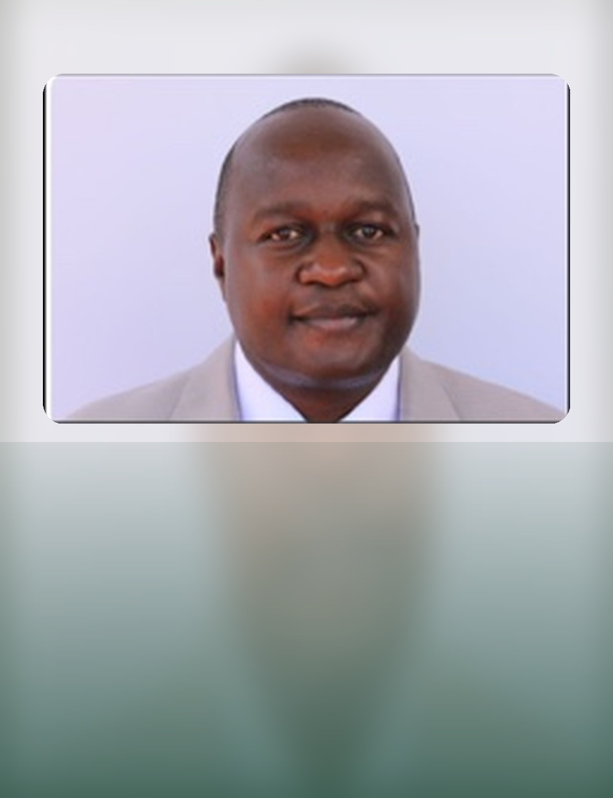
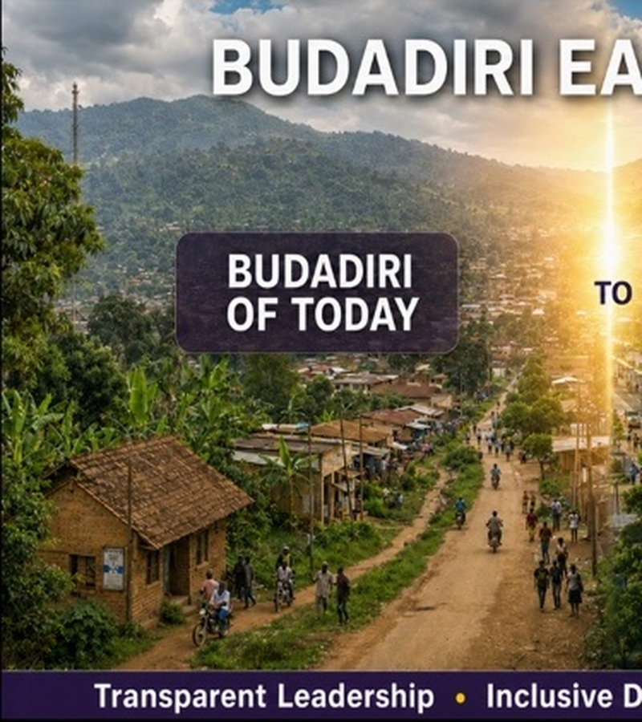
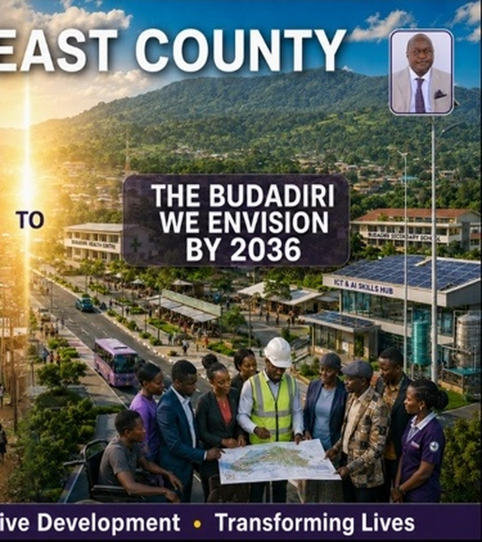

10 Jun 2026
Solar irrigation & climate resilience
Supported financing for solar-powered irrigation aimed at boosting coffee production and strengthening climate resilience.
Parliament source ↗A productive, educated, connected and climate-resilient Budadiri East in which every young person, woman, child and vulnerable household can participate in and benefit from inclusive local development.

The site is structured around outcomes people can understand and eventually measure - not a list of generic political promises.
Household income, agriculture, value addition, enterprise, markets and jobs.
Learning, skills, TVET, school infrastructure and pathways into work.
Roads, bridges, electricity, water, mobile access and digital connectivity.
Climate-smart farming, watershed protection, disaster readiness and resilient infrastructure.
Development access for youth, women, children, PWDs and vulnerable households.
Every pillar connects to a public tracker: issue → commitment → action → status → result.
Drag the divider to move between the present and the long-term development ambition.


Prototype statuses are a design baseline, not official completion percentages. Final public launch should connect to a verified constituency-office dataset.
“Transparent and visible leadership - accountable to the people, driven by their priorities and committed to transforming lives.”
Residents can record a community issue by area and category, receive a reference number, and - in the production system - follow its status.
Submit an issue →Supported financing for solar-powered irrigation aimed at boosting coffee production and strengthening climate resilience.
Parliament source ↗Called in Parliament for an expedited and transparent trial following a high-profile mob-justice killing.
Parliament source ↗Public commentary has linked road delivery, market access and economic transformation - a key connection for Budadiri East.
Coverage ↗Uganda Vision 2040 → NDP IV 2025/26–2029/30 → NRM Manifesto 2026–2031 → Budadiri East vision → measurable local outcomes.
See the framework →